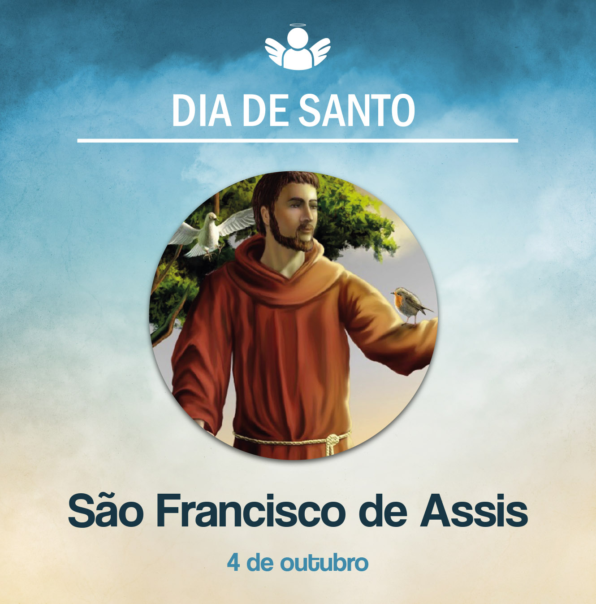

São Francisco de Assis
04 de outubro de, 2020
Celebramos hoje a memória de São Francisco de Assis. Nasceu em Assis, Itália, em 1182. Como filho de um nobre comerciante, Pedro Bernadone, viveu na riqueza e no esbanjamento. Passando pela igrejinha de São Damião, pediu a Deus que lhe mostrasse o caminho. Do crucifixo que pendia na parede, pareceu-lhe ouvir uma voz que lhe dizia: “Francisco, reconstrua a minha Igreja”. Sentiu um forte apelo de Deus e, voltando a sua casa, renunciou à vida de riqueza que levava e aos bens, e seguiu outro ideal, fundamentado na pobreza. Contava então com 25 anos de idade, quando deixou tudo para percorrer, de maneira radical, o caminho de Jesus.
Reformando a igrejinha de São Damião, foi descobrindo que Deus queria dele algo mais. No início de sua caminhada, experimentou muita pobreza, mas solitário. Após esse primeiro momento, começou a reunir alguns companheiros e, juntos, deram origem ao primeiro núcleo da Ordem dos Frades Menores de São Francisco.
Ocupavam-se com pregações, indo de um lugar a outro e em viagens missionárias. Testemunhava com a própria maneira de viver e levava a todos uma mensagem evangélica de “paz e bem”. Essa expressão continua sendo conhecida e proferida pelos franciscanos até os dias de hoje, em suas saudações.
Após viagens à Terra Santa e ao Egito, retornou a Assis e escreveu a segunda regra de sua Ordem, que foi aprovada pelo Papa Inocêncio III, em 1223. Nesse tempo, já se encontrava muito debilitado. No Monte Alverne, recebeu os estigmas de Cristo, em 14 de setembro de 1224. Foi um grande amante da natureza e a ela cantou o hino ao “Irmão Sol e Irmã Lua”. Referia-se a toda a natureza como irmão, irmã.
Debilitado, cego e rodeado por seus filhos espirituais na igrejinha da Porciúncula, Francisco, despojado de tudo e deitado sobre o chão, morreu no dia 3 de outubro de 1226. Foi canonizado pelo Papa Gregório IX, em 16 de julho de 1228. Assim se espalhou por todo o mundo o ideal de vida de São Francisco de Assis, pelo qual se tornou conhecido e amado. Muitos seguiram seus passos para cultivar esse espírito de pobreza, imitando seu exemplo de vida.
Que luzes deixa para nós esse santo que viveu muito radicalmente a pobreza? Num mundo consumista, onde as pessoas são levadas a comprar, acumular coisas e viver no luxo, que possamos aprender com Francisco o desprendimento dos bens. Assim, estaremos mais livres para experimentarmos o amor total, de doação, de serviço aos mais necessitados. Viver de maneira mais simples a nossa vida é o que nos ensina Francisco, que se desprendeu de tudo para ser pobre entre os pobres.
Paz e bem!